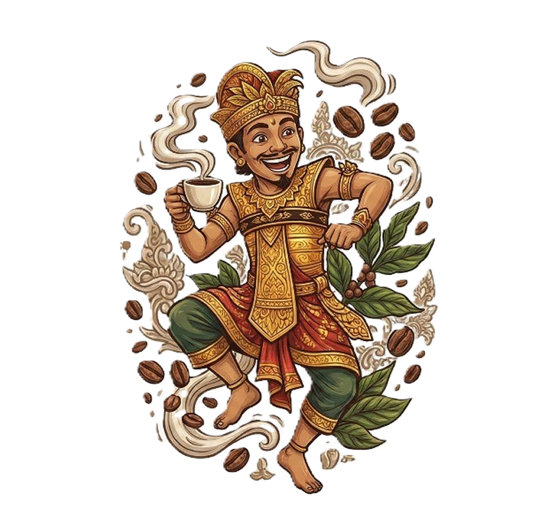
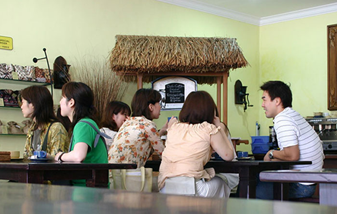
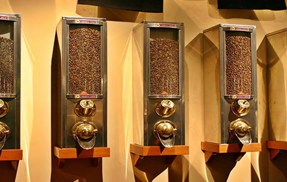
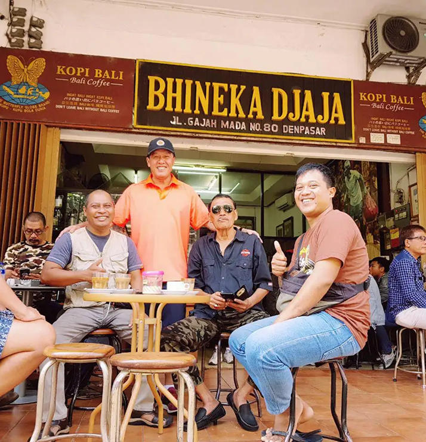
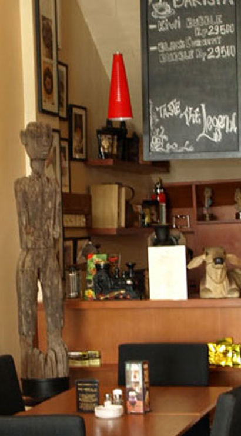

100% Kopi Alami
Kopi Bali menawarkan kopi dari berbagai perkebunan di Indonesia, yaitu Kintamani, Toraja, Mandhailing, Flores, dan daerah-daerah yang lebih dihargai.
Kopi Bali Cap Kupu-Kupu Bola Dunia. Berdiri sejak tahun 1935 menjadikan Bhineka Djaja sebagai kedai kopi khas Bali dengan cita rasa yang legenda.
Selengkapnya
Kopi Bali menawarkan kopi dari berbagai perkebunan di Indonesia, yaitu Kintamani, Toraja, Mandhailing, Flores, dan daerah-daerah yang lebih dihargai.
Berdiri sejak tahun 1935 menjadikan Bhineka Djaja sebagai kedai kopi khas Bali dengan cita rasa yang legenda.
Kopi Bali memahami permintaan pelanggan untuk memiliki campuran mereka sendiri dan berbagi gagasan tentang secangkir kopi yang sempurna. Dengan pemikiran ini, selain menawarkan asal tunggal atau campuran kopi tradisional, Kopi Bali mengundang setiap pelanggan untuk mengunjungi pabrik dan membantu mereka untuk membuat campuran khusus mereka sendiri dengan mencampur berbagai jenis biji kopi dan memanggangnya dengan sempurna.



